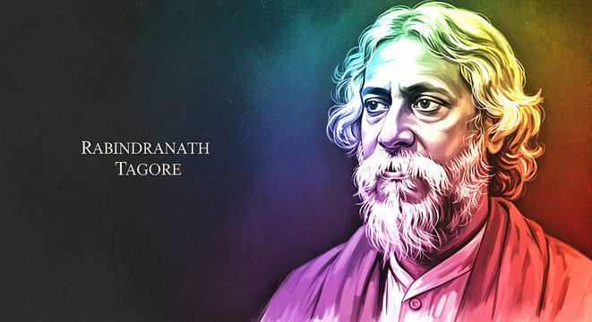

Why Santiniketan feels different: heritage, nature and a slower rhythm
Santiniketan was inscribed on the UNESCO World Heritage List in 2023. Its significance goes beyond individual buildings: the heritage property brings together landscape, architecture, art, education and living cultural traditions. That combination is part of what makes a visit here feel unlike an ordinary weekend getaway.
Explore the heritage story